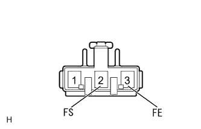
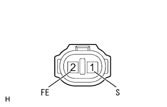

Fuel Sender Gauge Assembly Inspection |
| 1. Inspect Fuel Sender Gauge Assembly (Main) |
Operation Check
 |
Check that the float moves smoothly between the F level (upper end position) and E level (lower end position).
 |
Using SST (Toyota electrical tester), check the resistance between the terminals.
| Tester Connection (Terminal Symbol) | Condition | Standard |
|---|---|---|
| 2(FS) - 3(FE) | F (float upper end position) | 6.5 to 8.5Ω |
| 2(FS) - 3(FE) | E (float lower end position) | 186.9 to 191.9Ω |
| 2(FS) - 3(FE) | F (upper end) ←→ E (lower end) | Resistance changes smoothly |
| 2. Inspect Fuel Sender Gauge Assembly (Sub) |
Operation Check
 |
Check that the float moves smoothly between the F level (upper end position) and E level (lower end position).
 |
Using SST (Toyota electrical tester), check the resistance between the terminals.
| Tester Connection (Terminal Symbol) | Condition | Standard |
|---|---|---|
| 1(S) - 2(FE) | F (float upper end position) | 6.5 to 8.5Ω |
| 1(S) - 2(FE) | E (float lower end position) | 218.6 to 222.6Ω |
| 1(S) - 2(FE) | F (upper end) ←→ E (lower end) | Resistance changes smoothly |